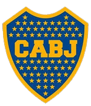
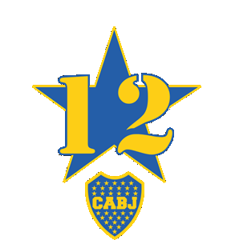

Es un equipo de fútbol Argentino creado en un 3 de abril de 1905, cuenta con 74 títulos; 18 internacionales, 52 locales y cuatro copas AFA-AUF. Ascendió a 1ra división en 1913 para nunca descender y es considerado el equipo más grande de América.
Por este club han pasado inolvidables jugadores como:
Y también pasaron directores técnicos que dejaron una huella imborrable en el equipo, como:
Es el nombre de la barra brava de BOCA, fundada en 1969 por Enrique Ocampo, tienen como rival los Llorones del Tablón (barra brava de RiBer Plate) y desde los 70s se presenta en cada encuentro futbolístico de Boja Juniors junto a sus banderas y percusión vistiendo siempre los colores del equipo, mostrando símbolos relacionados con el club, como banderas y bufandas.
La barra brava de Boca Juniors está organizada de manera jerárquica, con líderes que ejercen autoridad sobre los miembros y coordinan actividades tanto dentro como fuera de los estadios. Estos líderes suelen tener vínculos estrechos con la comunidad y a menudo son figuras prominentes en el ámbito local.
| Grupo D | ||||||||
|---|---|---|---|---|---|---|---|---|
| Club | PJ | G | E | P | GF | GC | DG | Pts |
| Fortaleza | 4 | 3 | 0 | 2 | 13 | 7 | 6 | 10 |
| Boca Juiors | 4 | 2 | 1 | 2 | 6 | 6 | 0 | 8 |
| Nacional Potosí | 5 | 2 | 1 | 2 | 6 | 9 | -3 | 7 |
| Sportivo Trinidense | 5 | 1 | 0 | 4 | 4 | 7 | -3 | 3 |